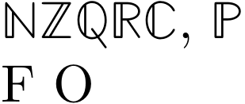

Blackboard bold is probably the most common way of denoting the "standard" number sets: the natural numbers, the integers and so on. In AMS-LaTeX, you use the \mathbb{...} command to obtain them; the ConTeXt way is the \blackboard{...} command. Also, the following commands are defined:
-
\setupbodyfont[32pt] \naturalnumbers \integers \rationals \reals \complexes, \primes \blackboard{F} \blackboard{O}
- 
See also Doublestroke for an alternative to the msbm font.